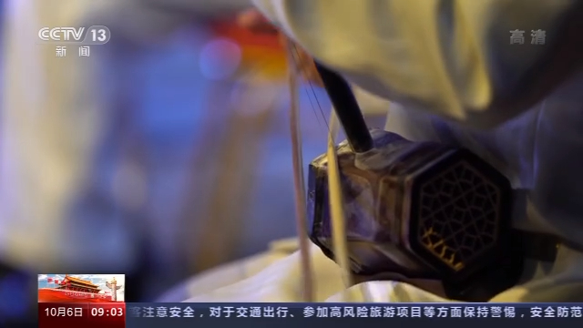
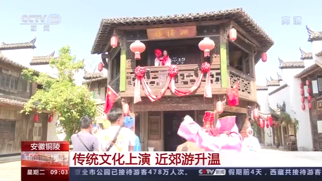

2020-10-06 15:55 央视新闻客户端
国庆假期期间，各地景区都开展了不同的民俗活动，让游客们体验不同的民俗文化，一些城市周边的特色景区也成为很多人的旅游目的地。
在占地20万平方米的四川自贡沿滩区永安镇回龙村草雕文化园区里，2000件左右大小不同、形态各异的创意草雕作品展现在游客面前，吸引了许多游人驻足欣赏、拍照留念。
据了解，这些稻草全部是从周边农户家里收购的，对周边群众总体增加收益50万元左右。此外，今年国庆期间，自贡市富顺县等地，还举办了二胡音乐会、诵读会等庆祝活动，给游客们带来了多种多样的假期体验。
这几天，在安徽铜陵市义安区的犁桥水镇，一场传统民俗文化节拉开了序幕，一座座建筑青瓦白墙、古色古香，景区里小桥流水、亭台楼阁，让游客置身其中就仿佛进入了古时的江南水乡。
除了古色古香的环境以外，景区里还有传统文化演艺，绣球招亲、衙门审案、江南四大才子等演出，吸引了许多游客驻足观看。
中秋国庆长假期间，江西、福建等地的科技馆、博物馆举行多种活动，为市民带来一场场文化大餐。
国庆长假，江西新余市民走进科技馆，体验科技带来的无穷乐趣，学习科普知识，点亮好奇心。孩子们在家长的带领下，一路参观，体验VR技术的神奇，探索发电的秘密，一起感受人类探索求真的科学发展史。
今年中秋国庆长假，福建的文化场馆首次夜间开放，在福建非遗博览苑，畲族提线木偶戏表演融合了茶艺、纺织技艺和畲歌畲韵，用满满的民族风，迎接八方来客。除了展示福建不同地域、不同流派的木偶戏作品，福建非遗博览苑还特别推出非遗精品展演展示活动，十多个门类的馆藏精品让游客细细品味。